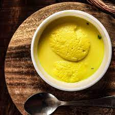

Gulab Jamun
Ingredients
- 1/2 tin Nestlé MILKMAID
- 600 gms Grated Paneer
- 200 gm Sooji/Rava
- 1½ tsp Baking Powder
- 1½ tsp Baking Soda
- Oil
- 2 litres Water
- 1kg Sugar
- 6-8 nos Coarsely Crushed Cardamom
Recipe
- Boil sugar and water to prepare syrup remove from fire. Add cardamom and keep aside to cool.
- In a mixing bowl put the flour, paneer, sooji, Nestlé MILKMAID, baking powder and baking soda. Mix gently to make a soft dough. Do not knead too much.
- Divide the mixture into 30-35 portions and gently roll into round gulab jamuns. Fry in the oil at very low flame till golden brown in color.
- Keep putting the fried gulab jamuns in the prepared sugar syrup. Once all the gulab jamuns are in the sugar syrup bring it to a boil and remove from flame.
- Serve warm.

Barfi
Ingredients
- 300 ml condensed milk
- 2 1/2 cup milk powder
- 2 tablespoon ghee
- 1 cup water
- 1 teaspoon powdered green cardamom
- 1 handful pistachios
- 1 handful almonds
Recipe
- Take a large bowl and add milk powder to it along with milk. Make a rigid dough using these ingredients. Once done, keep the dough in the freezer and freeze it for at least for 20 minutes.
- Take the dough and grate it in a bowl. Keep this grated dough aside for further usage. Take a deep bottomed pan, keep it on low flame and heat ghee in it.
- Add the grated dough to this pan with water. Mix well and stir in cardamom powder in the pan. Cook this mixture until the water dries out and the mixture accumulates in the centre of the pan.
- Pour this prepared mixture into a greased tray and garnish it with almonds and pistachios. Let the mixture cool down and cut the barfi into desired shapes. Garnish it with silver varq and serve!

Ras Malai
Ingredients
- 2 litre milk
- 1 tablespoon sliced,chopped pistachios
- 2 tablespoon water
- 1 1/2 litre boiling water
- 3 cup sugar
- 1 tablespoon sliced,chopped almonds
- 2 litres Water
- 1/2 teaspoon powdered green cardamom
- 2 tablespoon lime juice
Recipe
- Prepare the chenna: To prepare this easy sweet recipe from a scratch, you need to begin with making the chenna at home. Take a deep bottomed saucepan and boil 1 1/2 litres of milk at a high flame. Once the milk starts boiling, turn off the flame. Mix water with lemon juice and add into the hot milk. Once the milk starts crumbling, drain out the excess water using a muslin cloth and tightly tie the crumbled milk extracts in the cloth. Put it aside for 15-20 minutes.
- Prepare the sugar syrup: Rub the chhena till it's soft like white butter and you can make a dough out of it. Once done, make some balls with the dough and press them a little. Repeat the process till the dough is finished. Cover them with a wet cloth and then prepare the sugar syrup. For the same, put a kadhai over medium flame and add 2 cups of sugar in it along with 1 1/2 litre hot water. Just boil the water and your sugar syrup is ready, add your rasmalai in the sugar syrup and boil for 5 minutes. The rasmalais will turn double and this is the indication to turn off your flame.
- Prepare the saffron milk for Rasmalai: Take a deep bottomed pan and boil the remaining milk in it. Once the milk starts boiling, add saffron in it along with chopped pistachios and almonds. Allow this milk blend to attain a slightly thick consistency for about 5-7 minutes. Now, add 1 cup sugar in it and mix well. Once the milk blend is reduced to half, turn off the flame and transfer it to a bowl.
- Dip the sweet balls and indulge in the goodness: Now, add the sugar syrup in a bowl filled with ice cubes. Add the rasmalai in this hot-cold sugar syrup one by one. Keep them in it for 2 minutes and then squeeze the extra water and add the rasmalai in saffron milk. Let the rasmalai soak for 3-4 hours to absorb the creamy texture of the milk. It tastes best when served chilled!
